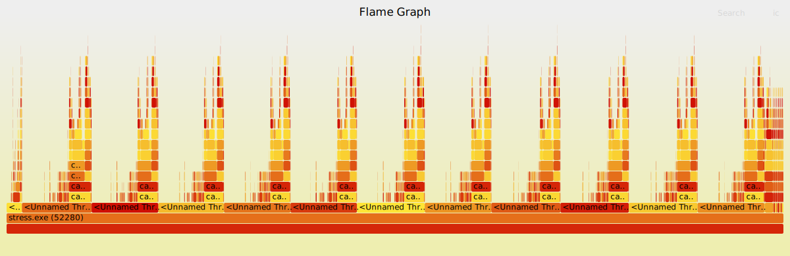

Generating OCaml flamegraphs on MacOS
Flame Graphs are a visualisation for sampled stack frames. They provide a great way to visualise stack traces of profiled software to identify the most frequent code-paths and optimise them. Popularised by Brendan Gregg loads more information can be found on his blog https://www.brendangregg.com/flamegraphs.html
Here we are interested in how we can generate Flame Graphs for OCaml programs on macOS. macOS is what I use for development work and I could not find other documentation on how to do this. So here we are.
Getting Started
First we need XCode and Instruments installed, get them via the App Store by searching for XCode and installing that. Instruments.app is Apple's profiling tool for capturing and visualising traces, along with many other interesting things. It is built on top of the DTrace tracing framework from OpenSolaris, which was ported to Mac OS X v10.5 and is available in all following versions of macOS. Dtrace is very cool and deserves its own post on how to use it effectively on OCaml programs.
After XCode is installed confirm that Instruments is also installed, this command will find the xctrace executable:
$ xcrun --find xctrace
/Applications/Xcode.app/Contents/Developer/usr/bin/xctrace
xctrace is a command line version of Instruments which allows capturing traces from a terminal. To run a Time Profiler against an OCaml process use the following command, substituing PROGRAM with the OCaml executable. Often found under _build/default directory of a Dune project. For my project the executable is called./_build/default/stress/stress.exe
$ xctrace record --output . --template "Time Profiler" \
--target-stdout - --launch -- PROGRAM
This will create a trace file ending in .trace, open that trace file in Instruments, select the Time Profiler and select a Stack Thread in the lower left pane. Choose Select Edit > Deep Copy from the menu and paste the output into a file called ocaml-program.trace. On MacOS Sonoma using Instruments 15.2 it looks like:

Next download the Perl file https://github.com/brendangregg/FlameGraph/blob/master/stackcollapse-instruments.pl
to reduce the trace into a format that Flame Graphs can understand. You will need to make it executable with chmod +x stackcollapse-instruments.pl
./stackcollapse-instruments.pl ocaml-program.trace > ocaml-program.outfile
Then download the Flame Graph tool https://github.com/brendangregg/FlameGraph/blob/master/flamegraph.pl and
run that against the outfile created by stackcollapse-instruments. Again make it executable with chmod +x
./flamegraph.pl ocaml-program.outfile > ocaml-program.svg
This will produce an application level Flame Graph of the traced application stored in ocaml-program.svg.
Open that up in a Browser and click around to see where your OCaml program is spending it's time.
Another visualisation option is https://www.speedscope.app which can take the .trace file and produce a Flame Graph, without needing to run any scripts locally.
In Practice: Flame Graph for solver-service
Recently I have been looking at the performance of the solver-service which is used to perform opam solves for the OCaml Continuous Integration services run by Tarides. The code uses OCaml 5 with EIO and is expected to scale across multiple CPUs.
I used this xctrace command to run the stress test, setting some Garbage Collection parameters:
$ xctrace record --template "Time Profiler" \
--env=OCAMLRUNPARAM="M=352" --target-stdout \
- --launch -- ./_build/default/stress/stress.exe local \
--cache-dir=./cache --count=10
...
Solved warm-up requests in: 12.37s
Running another 10 solves...
10/10 complete
Solved 10 requests in 10.06s (1.01s/iter) (15.91 solves/s)
Target app exited, ending recording...
Recording completed. Saving output file...
Output file saved as: Launch_stress.exe_2024-01-18_11.45.55_042428AC.trace
$ open Launch_stress.exe_2024-01-18_11.45.55_042428AC.trace
# Export data into a file called `macos-solver-02.trace`
$ ./stackcollapse-instruments.pl macos-solver-02.trace > macos-solver-02.outfile
$ ./flamegraph.pl macos-solver-02.outfile > macos-solver-02.svg
Producing this Flame Graph for the service. Note this was running on a 12 core M3Pro MacBookPro hence the 12 peaks relating to OCaml 5 using all available cores in this machine. 
Next step is working out where time is being spend and where we can speed up things.